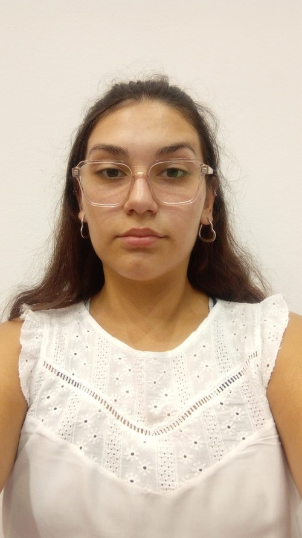

SOBRE MI
Hola!! me llamo Rosario Bonata, tengo 19 años y el objetivo de esta página web es que me conozcan un poquito más.
Es mi primer año estudiando en UADE, pero no mi primera vez en una universidad. En el 2023 empecé la Tecnicatura en Programación en la Universidad Nacional de Quilmes.
Actualmente estoy cursando la Licenciatura en Gestión de Tecnología de la Información
Me interesa aprender sobre el Front-End y todo lo que implica el diseño y desarrollo de sitios web. Desde que empecé a insertarme en el mundo informático, me ha fascinado la parte visual e interactiva de las aplicaciones, donde los usuarios tienen su primer contacto con los productos digitales. Esta pasión por el Front-End me ha llevado a profundizar en tecnologías como HTML y CSS, que son esenciales para crear interfaces que no solo sean funcionales, sino también atractivas y agradables de usar.
Además, no solo me interesa la parte técnica, sino que quiero especializarme en Diseño de Experiencia de Usuario (UX) y Diseño de Interfaz de Usuario (UI). Estas dos áreas son clave para crear productos que no solo se vean bien, sino que también ofrezcan una experiencia fluida y centrada en el usuario.